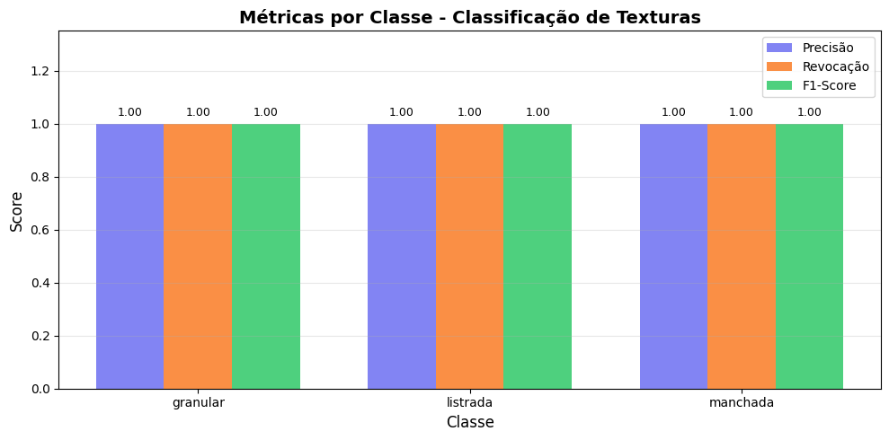

# Instalar apenas as bibliotecas ausentes
import importlib
import subprocess
import sys
for mod, pkg in {
"cv2": "opencv-python",
"skimage": "scikit-image",
"numpy": "numpy",
"sklearn": "scikit-learn",
"matplotlib": "matplotlib",
"pandas": "pandas",
"tabulate": "tabulate",
}.items():
try:
importlib.import_module(mod)
except ImportError:
subprocess.run([sys.executable, "-m", "pip", "install", "-q", pkg], check=True)
# Imports
import cv2
import numpy as np
import matplotlib.pyplot as plt
from skimage import data as skdata
from skimage.feature import hog, local_binary_pattern7 Classificação de Imagens e Reconhecimento de Padrões


🚧 Em construção!
No Capítulo 6, a transição da Parte I para a Parte II foi apresentada por meio de duas aplicações que já exigiam decisões automatizadas: o reconhecimento de marcas em folhas de resposta (OMR) e a detecção de defeitos em inspeção industrial. Em ambos os casos, no entanto, as decisões dependiam de regras geométricas e de limiares definidos manualmente, como determinar se um disco era suficientemente circular ou se uma região era escura o bastante.
Este capítulo formaliza o problema mais geral subjacente a essas aplicações: dado um conjunto de exemplos rotulados, como treinar um sistema para classificar automaticamente novas imagens ou regiões de interesse? Essa questão está no núcleo do Reconhecimento de Padrões, disciplina que fundamenta grande parte das tarefas modernas de Visão Computacional, desde a classificação de imagens até a detecção de objetos e a segmentação semântica, exploradas nos próximos capítulos.
Serão estudados os principais descritores clássicos de imagem (cor, textura e forma/gradiente) e o classificador k-Vizinhos mais Próximos (k-Nearest Neighbors — k-NN), escolhido por sua simplicidade conceitual e por evidenciar, de forma direta, a relação entre o espaço de características, as métricas de distância e as fronteiras de decisão — conceitos que permanecem centrais mesmo em classificadores baseados em redes neurais profundas, estudados no capítulo final desta parte.
7.1 Objetivos do Capítulo
Ao final deste capítulo, o estudante deverá ser capaz de:
- Compreender o pipeline clássico de reconhecimento de padrões: aquisição, pré-processamento, extração de descritores, classificação e avaliação;
- Extrair e interpretar descritores clássicos de cor, textura (Local Binary Patterns — LBP) e forma/gradiente (Histogram of Oriented Gradients — HOG);
- Implementar e treinar um classificador k-NN para tarefas de classificação de imagens;
- Avaliar classificadores por meio de métricas como acurácia, matriz de confusão, precisão e revocação;
- Analisar o efeito do parâmetro k e da dimensionalidade do espaço de características no desempenho do classificador;
- Reconhecer as limitações dos descritores artesanais (hand-crafted features) e compreender a motivação para a transição, nos próximos capítulos, para descritores aprendidos automaticamente.
7.2 Configuração do Ambiente
Os exemplos deste capítulo utilizam bibliotecas amplamente empregadas em Processamento Digital de Imagens, Visão Computacional e Aprendizado de Máquina. O bloco abaixo instala os pacotes necessários; em ambientes que já os possuam, a execução pode ser ignorada.
Assim como no capítulo anterior, será utilizado o módulo didático morph.py, responsável por padronizar a leitura, a exibição e o processamento de imagens ao longo do livro.
import os
import urllib.request
if not os.path.exists("morph.py"):
urllib.request.urlretrieve(
"https://raw.githubusercontent.com/fzampirolli/pdi-vc/master/morph/morph.py",
"morph.py",
)
import morph
from morph import mm
print(f"✅ Ambiente pronto. morph {getattr(morph, '__version__', 'local_file')}")✅ Ambiente pronto. morph 1.1.27.3 Um Problema Concreto: Classificação de Frutas
Antes de apresentar os fundamentos teóricos, considere o seguinte problema, que será utilizado como exemplo ao longo deste capítulo para ilustrar os principais conceitos de reconhecimento de padrões.
O cenário: Uma fazenda automatizada utiliza um sistema de Visão Computacional para separar maçãs, bananas e laranjas em linhas de embalagem.
O desafio: As frutas chegam à esteira em diferentes posições e orientações, sob condições de iluminação que podem variar. Além disso, folhas, sombras e pequenas oclusões podem dificultar sua identificação. Como desenvolver um sistema capaz de classificá-las corretamente?
Uma possível abordagem:
Extrair descritores que representem características relevantes das frutas:
- Cor: distribuição predominante das cores;
- Textura: diferenças na superfície da casca;
- Forma: características geométricas do contorno.
Treinar um classificador utilizando exemplos previamente rotulados.
Utilizar o modelo treinado para classificar automaticamente novas frutas.
A Figura 7.1 ilustra, de forma conceitual, como diferentes frutas podem ser representadas em um espaço de características tridimensional.
DicaReflita antes de continuar
Se cada fruta fosse representada apenas pelos valores de intensidade de seus pixels, seria possível distingui-las de forma confiável? Que tipos de informação poderiam ser extraídos da imagem para facilitar essa tarefa?
import numpy as np
import matplotlib.pyplot as plt
from mpl_toolkits.mplot3d import Axes3D
# Gerar dados sintéticos simulando descritores de frutas
def gerar_dados_frutas(n_amostras=200, ruido=0.3):
"""Gera dados sintéticos que simulam descritores de frutas"""
np.random.seed(42)
centros = {
'Maca': [0.8, 0.2, 0.9], # Vermelha, lisa, redonda
'Banana': [0.3, 0.1, 0.2], # Amarela, lisa, alongada
'Laranja': [0.9, 0.8, 0.8] # Laranja, rugosa, redonda
}
X = []
y = []
for fruta, centro in centros.items():
dados = np.random.randn(n_amostras // 3, 3) * ruido + centro
X.append(dados)
y.extend([fruta] * (n_amostras // 3))
X = np.vstack(X)
return X, y
# Gerar dados
X, y = gerar_dados_frutas()
# Configuração da figura com margens ampliadas nas bordas
fig = plt.figure(figsize=(10, 10))
ax = fig.add_subplot(111, projection='3d')
# Separar por classe e plotar
frutas_unicas = np.unique(y)
cores_plot = ['red', 'gold', 'orange']
marcadores = ['o', 's', '^']
for i, fruta in enumerate(frutas_unicas):
mask = np.array(y) == fruta
ax.scatter(X[mask, 0], X[mask, 1], X[mask, 2],
c=cores_plot[i], label=fruta, alpha=0.7, s=50,
marker=marcadores[i])
# Ajuste fino das legendas dos eixos e espaçamentos
ax.set_xlabel('Intensidade de Cor', labelpad=12)
ax.set_ylabel('Textura (rugosidade)', labelpad=12)
ax.set_zlabel('Forma (circularidade)', labelpad=0)
ax.set_title('Espaço de Características das Frutas\n(espaço de features)', pad=25)
ax.legend(loc='upper left', bbox_to_anchor=(0.05, 0.95), title='Frutas', title_fontsize='11', fontsize='11')
# Ajustes para evitar corte do eixo
ax.set_box_aspect((1, 1, 0.8))
ax.dist = 12
plt.subplots_adjust(left=0.15, right=0.9, bottom=0.15, top=0.85)
plt.show()
print("\nObserve como as frutas formam agrupamentos distintos!")
print(" - Maçãs (vermelho): alta cor, forma redonda")
print(" - Bananas (amarelo): baixa forma (alongadas)")
print(" - Laranjas (laranja): alta textura (rugosas)")
Observe como as frutas formam agrupamentos distintos!
- Maçãs (vermelho): alta cor, forma redonda
- Bananas (amarelo): baixa forma (alongadas)
- Laranjas (laranja): alta textura (rugosas)7.4 Fundamentos de Reconhecimento de Padrões
Um sistema de reconhecimento de padrões tem como objetivo atribuir uma categoria (rótulo) a uma observação — uma imagem inteira, uma região de interesse ou um sinal — com base em exemplos previamente rotulados. De forma geral, esse processo é organizado nas seguintes etapas:
- Aquisição: obtenção da imagem ou do sinal a ser classificado;
- Pré-processamento: normalização, remoção de ruído, correção geométrica ou de iluminação — etapas já estudadas nos capítulos anteriores;
- Extração de descritores (features): transformação da imagem em um vetor de características de dimensão fixa, que representa as propriedades relevantes para a tarefa de classificação;
- Classificação: aplicação de um modelo que associa o vetor de características a uma classe;
- Avaliação: análise do desempenho do modelo em um conjunto de dados independente daquele utilizado para o treinamento.
O conjunto de todos os vetores de características possíveis constitui o espaço de características (feature space). Um bom descritor produz representações que aproximam, nesse espaço, observações da mesma classe e afastam observações de classes distintas. Essa propriedade favorece métodos de classificação baseados em proximidade, como o k-NN, e também beneficia diversos outros classificadores.
A Figura 7.1 ilustra esse conceito de forma esquemática: cada fruta é representada por um ponto em um espaço de características de três dimensões (cor, textura e forma). Embora esse espaço seja apenas uma simplificação didática, ele mostra como amostras da mesma classe tendem a formar agrupamentos, enquanto classes diferentes ocupam regiões distintas, facilitando a tarefa de classificação.
7.5 Extração de Descritores Clássicos
Antes da popularização das redes neurais profundas, os descritores de imagem eram, em sua maioria, projetados manualmente por especialistas (hand-crafted features), com base em propriedades estatísticas ou geométricas conhecidas. Três famílias clássicas são particularmente relevantes:
- Descritores de cor: histogramas de intensidade ou de matiz, que capturam a distribuição dos valores de cor de uma região, já introduzidos no Capítulo 3 por meio da função
mm.hist; - Descritores de textura: capturam padrões locais de repetição, rugosidade ou orientação, como o Local Binary Patterns (LBP), estudado a seguir;
- Descritores de forma/gradiente: descrevem a distribuição das bordas e das orientações do gradiente, como o Histogram of Oriented Gradients (HOG), amplamente empregado na detecção de pessoas e outros objetos.
Para entender por que descritores são tão poderosos, a Figura 7.2 mostra como diferentes técnicas “enxergam” a mesma imagem.
import numpy as np
import matplotlib.pyplot as plt
from skimage.feature import local_binary_pattern, hog
from skimage import data
# Carregar uma imagem exemplo
imagem = data.camera()
# Calcular descritores
def calcular_lbp_visual(img, P=8, R=1):
"""Calcula LBP e retorna imagem codificada"""
lbp = local_binary_pattern(img, P=P, R=R, method='uniform')
return lbp
def calcular_hog_visual(img):
"""Calcula HOG e retorna os gradientes"""
features, hog_image = hog(img, orientations=9, pixels_per_cell=(8, 8),
cells_per_block=(2, 2), visualize=True)
return features, hog_image
# Aplicar descritores
lbp_img = calcular_lbp_visual(imagem)
_, hog_img = calcular_hog_visual(imagem)
# Visualização
fig, axes = plt.subplots(2, 2, figsize=(12, 10))
# Imagem original
axes[0, 0].imshow(imagem, cmap='gray')
axes[0, 0].set_title('1. Imagem Original\n(como o humano vê)')
axes[0, 0].axis('off')
# LBP visualizado - CORREÇÃO DA LEGENDA
axes[0, 1].imshow(lbp_img, cmap='nipy_spectral')
axes[0, 1].set_title('2. LBP: Padrões Locais de Textura\n(Cada cor = um padrão binário diferente)')
axes[0, 1].axis('off')
axes[0, 1].text(10, 20, 'Padrões diferentes = cores diferentes', color='white', fontsize=10)
# HOG visualizado
axes[1, 0].imshow(hog_img, cmap='gray')
axes[1, 0].set_title('3. HOG: Gradientes e Contornos\n(Brilho = força do gradiente)')
axes[1, 0].axis('off')
# Explicação comparativa
axes[1, 1].axis('off')
axes[1, 1].text(0.1, 0.9, "Como cada descritor 'pensa':",
fontsize=14, fontweight='bold', transform=axes[1, 1].transAxes)
axes[1, 1].text(0.1, 0.7, "LBP: 'Quais padrões de textura aparecem?'",
fontsize=12, transform=axes[1, 1].transAxes)
axes[1, 1].text(0.1, 0.5, "HOG: 'Quais são as formas e contornos?'",
fontsize=12, transform=axes[1, 1].transAxes)
axes[1, 1].text(0.1, 0.3, "Dica: Descritores são como 'lentes'",
fontsize=12, transform=axes[1, 1].transAxes)
axes[1, 1].text(0.1, 0.1, "Cada uma revela aspectos diferentes da imagem",
fontsize=12, transform=axes[1, 1].transAxes)
plt.tight_layout()
plt.show()
print("\nObserve como cada descritor destaca propriedades diferentes:")
print(" - LBP: captura padrões de textura (ex: áreas rugosas vs lisas)")
print(" - HOG: captura contornos e formas (ex: bordas do objeto)")
print(" - Pixels brutos: apenas intensidade (mais suscetível a variações)")
Observe como cada descritor destaca propriedades diferentes:
- LBP: captura padrões de textura (ex: áreas rugosas vs lisas)
- HOG: captura contornos e formas (ex: bordas do objeto)
- Pixels brutos: apenas intensidade (mais suscetível a variações)7.5.1 Local Binary Patterns (LBP)
O LBP é um descritor de textura que codifica, para cada pixel central \(g_c\), a relação entre sua intensidade e a dos \(P\) vizinhos dispostos em uma vizinhança circular de raio \(R\):
\[ \mathrm{LBP}_{P,R}(x_c, y_c) = \sum_{p=0}^{P-1} s(g_p - g_c)\, 2^p, \qquad s(z) = \begin{cases} 1, & z \geq 0 \\ 0, & z < 0 \end{cases} \]
em que:
- \((x_c, y_c)\) são as coordenadas do pixel central;
- \(g_c\) é a intensidade do pixel central;
- \(g_p\) é a intensidade do \(p\)-ésimo pixel vizinho;
- \(P\) é o número de vizinhos considerados;
- \(R\) é o raio da vizinhança circular;
- \(p\) é o índice do vizinho, com \(p = 0, 1, \ldots, P-1\);
- \(s(z)\) é a função limiar definida na equação, em que \(z = g_p - g_c\); ela assume valor 1 quando \(z \geq 0\) e 0 quando \(z < 0\);
- \(2^p\) corresponde ao peso binário associado ao \(p\)-ésimo vizinho.
O código LBP obtido descreve o padrão local de contraste ao redor do pixel central. O histograma dos códigos LBP calculados em uma região constitui um vetor de características compacto para representar sua textura. Na variante uniforme adotada neste capítulo, essa representação apresenta invariância a transformações monotônicas da intensidade, como variações graduais de iluminação.
A Figura 7.2 ilustra o processo de codificação dos padrões locais de textura pelo descritor LBP.
O Projeto Prático 2 (seção Classificação de Texturas com Descritores LBP) emprega o LBP na classificação de diferentes tipos de textura sintética.
7.5.2 Histogram of Oriented Gradients (HOG)
O HOG é um descritor que representa a forma de um objeto por meio da distribuição das orientações do gradiente local. Assim como no operador de Canny (Capítulo 6), calcula-se inicialmente o gradiente:
\[ |\nabla f(x,y)| = \sqrt{\left(\frac{\partial f}{\partial x}\right)^2 + \left(\frac{\partial f}{\partial y}\right)^2}, \qquad \theta(x,y) = \operatorname{atan2}\!\left( \frac{\partial f}{\partial y}, \frac{\partial f}{\partial x} \right). \]
em que:
- \(f(x,y)\) é a intensidade da imagem no pixel \((x,y)\);
- \(\frac{\partial f}{\partial x}\) e \(\frac{\partial f}{\partial y}\) são, respectivamente, as derivadas parciais da imagem nas direções horizontal e vertical;
- \(|\nabla f(x,y)|\) é a magnitude do vetor gradiente no pixel \((x,y)\), indicando a intensidade da variação local da imagem;
- \(\theta(x,y)\) é a orientação do vetor gradiente no pixel \((x,y)\), calculada pela função \(\operatorname{atan2}\), cujo resultado pertence ao intervalo \((-\pi,\pi]\).
A imagem é então dividida em pequenas células. Para cada célula, constrói-se um histograma das orientações do gradiente, ponderado pela magnitude correspondente. A concatenação dos histogramas de todas as células forma o vetor de características HOG, que representa a distribuição espacial das orientações do gradiente e captura informações sobre a forma e os contornos do objeto.
A Figura 7.2 ilustra a representação produzida pelo descritor HOG a partir da imagem original.
O Projeto Prático 1 (seção Classificação de Dígitos Manuscritos com k-NN) compara o desempenho de descritores HOG com o uso direto das intensidades dos pixels como vetor de características.
7.5.3 O Impacto da Escala e a Normalização de Características
Como o classificador \(k\)-NN baseia-se diretamente em cálculos de distâncias geométricas (como a Euclidiana), ele é extremamente sensível à escala de magnitude das variáveis do vetor de características. Se uma característica possuir uma ordem de grandeza significativamente maior do que as outras (por exemplo, a intensidade de cor variando de \(0\) a \(255\) contra um índice de circularidade que varia de \(0\) a \(1\)), essa variável dominará a soma dos quadrados das diferenças, anulando a influência dos demais atributos.
Para contornar essa distorção, aplica-se a Normalização de Características (geralmente por meio do Z-score standardization), garantindo que todas as dimensões do espaço de características contribuam equitativamente para a tomada de decisão. A Figura 7.3 ilustra o efeito prático dessa etapa: sem a normalização, a distribuição dos dados é severamente distorcida ao longo do eixo de maior magnitude; após o escalonamento, os eixos tornam-se balanceados, permitindo que o cálculo de proximidade reflita a verdadeira vizinhança estrutural dos padrões.
from sklearn.preprocessing import StandardScaler
import numpy as np
import matplotlib.pyplot as plt
# Demonstrar efeito da normalização
np.random.seed(42)
X_demo = np.random.randn(20, 2) * [100, 1] # Features com escalas diferentes
y_demo = np.array([0]*10 + [1]*10)
# Sem normalização - distâncias dominadas pela primeira feature
print("📏 Efeito da Normalização:")
print(f" Feature 1: escala ~100 (domina as distâncias)")
print(f" Feature 2: escala ~1 (pouco influente)")
print("\n Sem normalização: a feature de maior escala domina completamente")
print(" Com normalização: ambas as features têm o mesmo peso")
# Exemplo visual
fig, axes = plt.subplots(1, 2, figsize=(10, 4))
# Sem normalização
axes[0].scatter(X_demo[y_demo==0, 0], X_demo[y_demo==0, 1], c='blue', label='Classe 0')
axes[0].scatter(X_demo[y_demo==1, 0], X_demo[y_demo==1, 1], c='red', label='Classe 1')
axes[0].set_title('Sem Normalização\n(Feature 1 domina)')
axes[0].set_xlabel('Feature 1 (escala 100)')
axes[0].set_ylabel('Feature 2 (escala 1)')
axes[0].legend()
# Com normalização
scaler = StandardScaler()
X_norm = scaler.fit_transform(X_demo)
axes[1].scatter(X_norm[y_demo==0, 0], X_norm[y_demo==0, 1], c='blue', label='Classe 0')
axes[1].scatter(X_norm[y_demo==1, 0], X_norm[y_demo==1, 1], c='red', label='Classe 1')
axes[1].set_title('Com Normalização\n(Features balanceadas)')
axes[1].set_xlabel('Feature 1 (normalizada)')
axes[1].set_ylabel('Feature 2 (normalizada)')
axes[1].legend()
plt.tight_layout()
plt.show()
print("\n💡 A normalização é crucial quando features têm unidades diferentes!")📏 Efeito da Normalização:
Feature 1: escala ~100 (domina as distâncias)
Feature 2: escala ~1 (pouco influente)
Sem normalização: a feature de maior escala domina completamente
Com normalização: ambas as features têm o mesmo peso
💡 A normalização é crucial quando features têm unidades diferentes!7.6 Descritores na Prática
Após a apresentação dos principais descritores clássicos, surge uma questão importante: como eles se comportam diante de condições de aquisição sujeitas a variações de iluminação e à presença de ruído?
Para responder a essa questão, a Figura 7.4 apresenta as matrizes de confusão obtidas com cada abordagem, permitindo identificar as classes em que ocorrem os principais erros de classificação. Em complemento, a Figura 7.5 resume a acurácia obtida pelos descritores de pixels brutos, LBP e HOG em um cenário com variações de iluminação e ruído estruturado.
Os resultados mostram que o desempenho do classificador depende da representação utilizada para descrever as imagens. Enquanto o uso direto das intensidades dos pixels é mais sensível às degradações introduzidas, os descritores LBP e HOG preservam melhor as informações relevantes para a classificação, resultando em maior desempenho nesse cenário.
import numpy as np
import matplotlib.pyplot as plt
from sklearn.model_selection import train_test_split
from sklearn.neighbors import KNeighborsClassifier
from sklearn.metrics import accuracy_score, confusion_matrix
from sklearn.datasets import make_classification
import seaborn as sns
# Simular um dataset mais realista com variações
def gerar_dados_frutas_realistas():
"""Gera dados simulando frutas com diferentes condições"""
np.random.seed(42)
n_total = 300
n_classes = 3
n_features = 10
# Gerar dados com características realistas
X, y = make_classification(n_samples=n_total, n_features=n_features,
n_classes=n_classes, n_clusters_per_class=1,
n_informative=7, random_state=42)
# Simular diferentes descritores para a mesma imagem
descritores = {
'Pixels Brutos': X + np.random.randn(*X.shape) * 0.5,
'LBP': X + np.random.randn(*X.shape) * 0.3,
'HOG': X + np.random.randn(*X.shape) * 0.2
}
return descritores, y
# Gerar dados
descritores, y = gerar_dados_frutas_realistas()
# Criar uma única figura com 3 subplots lado a lado para as matrizes
fig, axes = plt.subplots(1, 3, figsize=(14, 4))
resultados = {}
for idx, (nome, X) in enumerate(descritores.items()):
X_train, X_test, y_train, y_test = train_test_split(X, y, test_size=0.3, random_state=42)
knn = KNeighborsClassifier(n_neighbors=5)
knn.fit(X_train, y_train)
y_pred = knn.predict(X_test)
acc = accuracy_score(y_test, y_pred)
resultados[nome] = acc
# Matriz de confusão no subplot correspondente
cm = confusion_matrix(y_test, y_pred)
sns.heatmap(cm, annot=True, fmt='d', cmap='Blues', ax=axes[idx], cbar=False)
axes[idx].set_title(f'{nome}\nAcurácia: {acc:.3f}', fontsize=11, fontweight='bold')
axes[idx].set_ylabel('Real')
axes[idx].set_xlabel('Predito')
plt.tight_layout()
plt.show()
# Comparação visual em uma figura isolada
plt.figure(figsize=(8, 4.5))
nomes = list(resultados.keys())
acuracia = list(resultados.values())
colors = ['#6366f1', '#f97316', '#22c55e']
bars = plt.bar(nomes, acuracia, color=colors, width=0.5)
plt.ylabel('Acurácia Global')
plt.title('Desempenho Geral dos Descritores sob Ruído Realista', fontsize=12, fontweight='bold')
plt.ylim(0.5, 1.0)
plt.grid(axis='y', linestyle='--', alpha=0.5)
# Adicionar os valores acima das barras usando round padrão para exibição
for bar, val in zip(bars, acuracia):
plt.text(bar.get_x() + bar.get_width()/2, bar.get_height() + 0.01,
f'{val:.3f}', ha='center', fontweight='bold', fontsize=10)
plt.tight_layout()
plt.show()
print("\nAnálise dos resultados:")
print(" - Pixels Brutos: Sensíveis a variações locais de iluminação e ruído.")
print(" - LBP: Boa tolerância para variações monotônicas de iluminação global.")
print(" - HOG: Excelente para contornos e formas estáveis sob pequenas flutuações geométricas.")
Análise dos resultados:
- Pixels Brutos: Sensíveis a variações locais de iluminação e ruído.
- LBP: Boa tolerância para variações monotônicas de iluminação global.
- HOG: Excelente para contornos e formas estáveis sob pequenas flutuações geométricas.7.7 Classificador k-NN: Como Funciona por Dentro
O classificador k-NN não constrói um modelo explícito durante o treinamento — ele armazena o conjunto de treinamento e, para cada nova observação \(x\), calcula sua distância a todos os exemplos conhecidos.
7.7.1 Métrica de Distância
A métrica mais comum é a distância euclidiana entre vetores de características:
\[ d(x, x_i) = \lVert x - x_i \rVert_2 = \sqrt{\sum_{j=1}^{n} (x_j - x_{i,j})^2}. \]
Outras métricas, como a distância de Manhattan (\(\ell_1\)) ou a distância de Mahalanobis, também podem ser empregadas, dependendo da escala e da correlação entre as dimensões do espaço de características.
7.7.2 Regra de Decisão
Seja \(N_k(x)\) o conjunto dos \(k\) exemplos de treinamento mais próximos de \(x\) segundo a métrica escolhida. A classe predita \(\hat y\) é a moda das classes presentes em \(N_k(x)\):
\[ \hat y = \operatorname{moda}\{\, y_i : x_i \in N_k(x) \,\}. \]
Para entender na prática como cada etapa funciona, a Figura 7.6 mostra a classificação passo-a-passo de um ponto de teste.
import numpy as np
import matplotlib.pyplot as plt
from scipy.spatial import distance
def knn_passo_a_passo(X_treino, y_treino, x_teste, k=3, mostrar_passos=True):
"""
Implementação didática do k-NN mostrando cada etapa
Parâmetros:
- X_treino: dados de treino
- y_treino: labels de treino
- x_teste: uma amostra para classificar
- k: número de vizinhos
- mostrar_passos: se True, mostra visualizações intermediárias
"""
# PASSO 1: Calcular distâncias para todos os pontos de treino
distancias = []
for i, x_treino in enumerate(X_treino):
dist = np.linalg.norm(x_teste - x_treino)
distancias.append((dist, y_treino[i], i))
print("PASSO 1: Calculei a distância para cada ponto de treino")
print(f" Distâncias calculadas: {len(distancias)}")
# PASSO 2: Ordenar por distância
distancias.sort(key=lambda x: x[0])
if mostrar_passos:
print("\nPASSO 2: Ordenei por distância (5 mais próximos):")
for i in range(min(5, len(distancias))):
print(f" #{i+1}: distância={distancias[i][0]:.3f}, classe={distancias[i][1]}")
# PASSO 3: Selecionar os k mais próximos
k_vizinhos = distancias[:k]
print(f"\nPASSO 3: Selecionei os {k} vizinhos mais próximos")
# PASSO 4: Votação
votos = {}
for dist, classe, idx in k_vizinhos:
votos[classe] = votos.get(classe, 0) + 1
print("\nPASSO 4: Votação entre os vizinhos:")
for classe, qtd in votos.items():
print(f" Classe {classe}: {qtd} voto(s)")
# PASSO 5: Decisão
classe_predita = max(votos, key=votos.get)
print(f"\nPASSO 5: Classe predita: {classe_predita} (maioria dos votos)")
return classe_predita, distancias, k_vizinhos
# Exemplo prático
np.random.seed(42)
# Criar dados de exemplo (2D para visualização)
n_amostras = 30
X_treino = np.random.randn(n_amostras, 2)
X_treino[:15] += [2, 2] # Classe 0
X_treino[15:] += [-2, -2] # Classe 1
y_treino = np.array([0]*15 + [1]*15)
# Ponto de teste
x_teste = np.array([0.5, 0.5])
# Classificar
classe_pred, distancias, vizinhos = knn_passo_a_passo(X_treino, y_treino, x_teste, k=3)
# Visualização
plt.figure(figsize=(8, 8))
# Plotar pontos de treino
plt.scatter(X_treino[y_treino==0, 0], X_treino[y_treino==0, 1],
c='blue', label='Classe 0', s=100, alpha=0.7)
plt.scatter(X_treino[y_treino==1, 0], X_treino[y_treino==1, 1],
c='red', label='Classe 1', s=100, alpha=0.7)
# Plotar ponto de teste
plt.scatter(x_teste[0], x_teste[1], c='green', s=200,
marker='*', label='Ponto de teste', edgecolors='black', linewidths=2)
# Destacar os k vizinhos
for dist, classe, idx in vizinhos:
plt.scatter(X_treino[idx, 0], X_treino[idx, 1],
c='yellow', s=200, alpha=0.3, edgecolors='black', linewidths=2)
# Linha até o ponto de teste
plt.plot([x_teste[0], X_treino[idx, 0]],
[x_teste[1], X_treino[idx, 1]], 'k--', alpha=0.5, linewidth=1)
plt.xlabel('Feature 1')
plt.ylabel('Feature 2')
plt.title(f'k-NN com k={3}: Vizinhos Mais Próximos\nPonto teste será classificado como Classe {classe_pred}')
plt.legend()
plt.grid(alpha=0.3)
plt.axis('equal')
plt.tight_layout()
plt.show()
print(f"\nResultado final: Ponto teste pertence à Classe {classe_pred}")PASSO 1: Calculei a distância para cada ponto de treino
Distâncias calculadas: 30
PASSO 2: Ordenei por distância (5 mais próximos):
#1: distância=0.598, classe=0
#2: distância=0.964, classe=0
#3: distância=1.464, classe=0
#4: distância=1.506, classe=0
#5: distância=1.569, classe=0
PASSO 3: Selecionei os 3 vizinhos mais próximos
PASSO 4: Votação entre os vizinhos:
Classe 0: 3 voto(s)
PASSO 5: Classe predita: 0 (maioria dos votos)
Resultado final: Ponto teste pertence à Classe 07.7.3 O Papel do Parâmetro k
O parâmetro \(k\) controla diretamente o compromisso entre viés e variância (bias-variance trade-off):
- k pequeno (ex.: \(k=1\)): fronteira de decisão irregular, sensível a ruído e outliers — baixo viés, alta variância (tendência a overfitting);
- k grande: fronteira de decisão suave, que pode ignorar estruturas locais relevantes — alto viés, baixa variância (tendência a underfitting).
Em problemas de duas classes, recomenda-se utilizar valores ímpares de \(k\) para evitar empates na votação.
O simulador da Figura 7.7 permite explorar interativamente o efeito do parâmetro \(k\) sobre a fronteira de decisão.
Além disso, em espaços de características de alta dimensão, a noção de “proximidade” torna-se menos discriminativa — fenômeno conhecido como maldição da dimensionalidade (curse of dimensionality): à medida que o número de dimensões cresce, as distâncias entre pontos tendem a se tornar mais uniformes, reduzindo a capacidade do k-NN de distinguir vizinhos genuinamente próximos de pontos distantes.
Simulador: Fronteira de Decisão do k-NN
Clique no canvas para adicionar pontos
k
3
Pontos Azuis
0
Pontos Vermelhos
0
Classe Azul
Classe Vermelha
A região colorida de fundo mostra a classe que o k-NN atribuiria a cada ponto do plano.
NotaO efeito do parâmetro k
Ao experimentar o simulador da Figura 7.7, observa-se que valores baixos de \(k\) (por exemplo, \(k=1\)) produzem fronteiras irregulares, que se ajustam a cada ponto individual — inclusive a possíveis exemplos ruidosos ou mal rotulados. Ao aumentar \(k\), a fronteira se torna progressivamente mais suave, pois a decisão passa a refletir uma vizinhança maior, mais resistente a ruído local, ao custo de poder ignorar pequenas estruturas relevantes entre classes muito próximas ou desbalanceadas.
Na prática, o valor de \(k\) não deve ser escolhido arbitrariamente, mas sim por meio de validação cruzada, avaliando a acurácia média do modelo em diferentes partições do conjunto de treinamento para vários valores de \(k\) — procedimento demonstrado na seção Avaliação de Classificadores.
7.8 Projeto Prático 1: Classificação de Dígitos Manuscritos com k-NN
Este projeto utiliza a base pública load_digits do scikit-learn, composta por 1797 imagens de dígitos manuscritos (0–9) em resolução \(8 \times 8\) pixels em escala de cinza. Cada imagem é representada por um vetor de 64 atributos, correspondente às intensidades dos pixels. Essa base é amplamente utilizada em exemplos didáticos de classificação por ser pequena, aproximadamente balanceada entre as classes e não exigir download externo.
A Figura 7.8 apresenta uma amostra das imagens da base de dados.
from sklearn.datasets import load_digits
digits = load_digits()
print(f"Total de amostras: {digits.data.shape[0]}, dimensão do vetor: {digits.data.shape[1]}")
print(f"Classes: {sorted(set(digits.target))}")
n_amostras = 16
imgs = list(digits.images[:n_amostras])
imgs_titles = [str(label) for label in digits.target[:n_amostras]]
mm.show(imgs, titles=imgs_titles, cols=8, figsize=(12, 4))Total de amostras: 1797, dimensão do vetor: 64
Classes: [np.int64(0), np.int64(1), np.int64(2), np.int64(3), np.int64(4), np.int64(5), np.int64(6), np.int64(7), np.int64(8), np.int64(9)]
7.8.1 Classificação com Vetores de Intensidade
Como primeira abordagem, cada imagem de dimensão \(8 \times 8\) é representada diretamente pelo vetor de intensidades de seus 64 pixels, sem a extração de descritores adicionais. Esse vetor constitui o espaço de características utilizado pelo classificador.
Em seguida, o conjunto de dados é dividido em subconjuntos de treinamento e teste, preservando a proporção de exemplos de cada classe (stratify=y). Um classificador k-NN com \(k=3\) é então treinado com os dados de treinamento e avaliado sobre o conjunto de teste por meio da acurácia e da matriz de confusão, mostrada na Figura 7.9.
from sklearn.model_selection import train_test_split
from sklearn.neighbors import KNeighborsClassifier
from sklearn.metrics import accuracy_score, confusion_matrix
X, y = digits.data, digits.target
X_treino, X_teste, y_treino, y_teste = train_test_split(
X, y, test_size=0.25, random_state=42, stratify=y
)
n_neighbors = 3
knn_pixels = KNeighborsClassifier(n_neighbors=n_neighbors)
knn_pixels.fit(X_treino, y_treino)
pred_pixels = knn_pixels.predict(X_teste)
acc_pixels = accuracy_score(y_teste, pred_pixels)
print(f"Acurácia (vetores de intensidade, k={n_neighbors}): {acc_pixels:.4f}")
cm = confusion_matrix(y_teste, pred_pixels)
plt.figure(figsize=(5, 4))
plt.imshow(cm, cmap="Blues")
plt.title("Matriz de Confusão — Pixels Brutos")
plt.xlabel("Classe Predita")
plt.ylabel("Classe Real")
plt.xticks(range(10))
plt.yticks(range(10))
plt.colorbar(fraction=0.046)
plt.tight_layout()Acurácia (vetores de intensidade, k=3): 0.98447.8.2 Classificação com Descritores HOG
Repete-se o experimento substituindo os vetores de intensidade bruta por descritores HOG extraídos de cada imagem, avaliando se um descritor mais elaborado melhora o desempenho da classificação. A Figura 7.10 compara os resultados obtidos com ambas as abordagens.
descritores_hog = np.array([
hog(img, orientations=8, pixels_per_cell=(4, 4), cells_per_block=(1, 1))
for img in digits.images
])
print(f"Dimensão do vetor HOG: {descritores_hog.shape[1]}")
Xh_treino, Xh_teste, yh_treino, yh_teste = train_test_split(
descritores_hog, y, test_size=0.25, random_state=42, stratify=y
)
n_neighbors = 3
knn_hog = KNeighborsClassifier(n_neighbors=n_neighbors)
knn_hog.fit(Xh_treino, yh_treino)
pred_hog = knn_hog.predict(Xh_teste)
acc_hog = accuracy_score(yh_teste, pred_hog)
print(f"Acurácia (descritor HOG, k={n_neighbors}): {acc_hog:.4f}")
plt.figure(figsize=(4, 3))
plt.bar(["Pixels brutos", "HOG"], [acc_pixels, acc_hog], color=["#6366f1", "#f97316"])
plt.ylim(0, 1.1) # Aumenta o limite superior para dar espaço
plt.ylabel("Acurácia")
plt.title("Comparação de Descritores")
for i, v in enumerate([acc_pixels, acc_hog]):
plt.text(i, v + 0.02, f"{v:.3f}", ha="center") # Aumenta o deslocamento vertical
plt.tight_layout()Dimensão do vetor HOG: 32
Acurácia (descritor HOG, k=3): 0.7578
NotaPor que funciona? — Nem sempre o descritor mais elaborado vence
Um resultado à primeira vista contraintuitivo é observado na Figura 7.10: os vetores de intensidade bruta superam o descritor HOG nesta base. A explicação está no contexto dos dados: as imagens de load_digits já são pequenas (\(8\times8\)), pré-centralizadas e normalizadas — não há variação significativa de iluminação, translação ou escala entre as amostras. Nessas condições, a comparação pixel a pixel já é altamente informativa, e a agregação promovida pelo HOG (histogramas por célula) descarta parte dessa informação fina, que é justamente onde reside a diferença entre dígitos visualmente semelhantes (como 4 e 9, ou 3 e 8).
O HOG tende a superar descritores de pixels brutos em cenários mais realistas — imagens maiores, com variação de iluminação, pequenas translações ou fundo não controlado — situações em que a estrutura local de bordas é mais robusta do que a comparação direta de intensidades. Esse resultado ilustra um princípio importante em reconhecimento de padrões: a escolha do descritor deve ser guiada pelas características do problema, não apenas pela sofisticação teórica do método.
7.9 Avaliação de Classificadores
A acurácia — proporção de acertos sobre o total de amostras — é uma métrica intuitiva, mas insuficiente em problemas com classes desbalanceadas. A matriz de confusão detalha os acertos e erros por classe, permitindo calcular métricas complementares:
\[ \text{Precisão} = \frac{VP}{VP + FP}, \qquad \text{Revocação} = \frac{VP}{VP + FN}, \]
em que \(VP\), \(FP\) e \(FN\) denotam, respectivamente, o número de verdadeiros positivos, falsos positivos e falsos negativos de uma classe específica. A precisão mede a confiabilidade das predições positivas, enquanto a revocação mede a capacidade do classificador de identificar todos os exemplos verdadeiramente pertencentes à classe.
7.9.1 Escolha de k por Validação Cruzada
O código a seguir avalia a acurácia média do classificador k-NN, por validação cruzada de 5 partições (5-fold cross-validation), para diferentes valores de \(k\) na base de dígitos, permitindo identificar o valor mais adequado. A Figura 7.11 mostra os resultados obtidos.
from sklearn.model_selection import cross_val_score
valores_k = range(1, 16)
acuracias_medias = []
for k in valores_k:
modelo = KNeighborsClassifier(n_neighbors=k)
scores = cross_val_score(modelo, X, y, cv=5)
acuracias_medias.append(scores.mean())
melhor_k = list(valores_k)[int(np.argmax(acuracias_medias))]
print(f"Melhor valor de k encontrado: {melhor_k} (acurácia média={max(acuracias_medias):.4f})")
plt.figure(figsize=(6, 4))
plt.plot(list(valores_k), acuracias_medias, marker="o", color="#4f46e5")
plt.axvline(melhor_k, color="#f97316", linestyle="--", label=f"melhor k = {melhor_k}")
plt.xlabel("k")
plt.ylabel("Acurácia média (validação cruzada)")
plt.title("Seleção de k por Validação Cruzada")
plt.legend()
plt.grid(alpha=0.3)
plt.tight_layout()Melhor valor de k encontrado: 2 (acurácia média = 0.9672)
7.9.2 O Compromisso entre Viés e Variância: Diagnóstico de Overfitting e Underfitting
A escolha do hiperparâmetro \(k\) no classificador \(k\)-NN dita diretamente a complexidade geométrica da fronteira de decisão. Avaliar o desempenho do modelo exclusivamente sobre o conjunto de dados de treinamento é um erro metodológico clássico que mascara a incapacidade de generalização do algoritmo. Quando \(k\) assume valores muito pequenos (como \(k=1\)), a fronteira de decisão molda-se perfeitamente aos ruídos e às peculiaridades das amostras de treino, atingindo uma acurácia próxima de 100% nesse conjunto, mas falhando severamente diante de dados inéditos — fenômeno conhecido como sobreajuste (overfitting). Por outro lado, se \(k\) for excessivamente grande, o modelo perde sua sensibilidade local e passa a prever apenas a classe majoritária da região global, resultando em um subajuste (underfitting).
A Figura 7.12 ilustra o monitoramento sistemático dessas duas forças: ao contrastarmos as curvas de aprendizado do treino e do teste ao longo do espectro de vizinhos, torna-se possível delimitar a zona ideal de operação onde o modelo atinge o melhor compromisso entre viés e variância, maximizando a acurácia de teste.
import numpy as np
import matplotlib.pyplot as plt
from sklearn.neighbors import KNeighborsClassifier
from sklearn.metrics import accuracy_score
# Análise de overfitting para diferentes k
k_values = range(1, 16)
train_scores = []
test_scores = []
for k in k_values:
knn = KNeighborsClassifier(n_neighbors=k)
knn.fit(X_treino, y_treino)
train_acc = accuracy_score(y_treino, knn.predict(X_treino))
test_acc = accuracy_score(y_teste, knn.predict(X_teste))
train_scores.append(train_acc)
test_scores.append(test_acc)
# Visualizar
plt.figure(figsize=(10, 6))
plt.plot(k_values, train_scores, 'o-', label='Acurácia no Treino',
color='#6366f1', linewidth=2, markersize=8)
plt.plot(k_values, test_scores, 's-', label='Acurácia no Teste',
color='#f97316', linewidth=2, markersize=8)
plt.xlabel('k (número de vizinhos)', fontsize=12)
plt.ylabel('Acurácia', fontsize=12)
plt.title('Análise de Overfitting: Treino vs Teste', fontsize=14, fontweight='bold')
plt.legend(fontsize=11)
plt.grid(alpha=0.3)
# Destacar regiões de overfitting e underfitting
plt.axvspan(1, 3, alpha=0.2, color='red', label='Overfitting (k pequeno)')
plt.axvspan(12, 15, alpha=0.2, color='blue', label='Underfitting (k grande)')
plt.axvspan(4, 11, alpha=0.2, color='green', label='Região ideal')
# Encontrar melhor k
melhor_k_teste = k_values[np.argmax(test_scores)]
plt.axvline(x=melhor_k_teste, color='#22c55e', linestyle='--',
label=f'melhor k (teste) = {melhor_k_teste}', linewidth=2)
plt.tight_layout()
plt.show()
print("\n🔍 Análise de Overfitting:")
print(" - k pequeno (1-3): alta acurácia no treino, baixa no teste → OVERFITTING")
print(" - k médio (4-11): equilíbrio entre treino e teste → IDEAL")
print(" - k grande (12-15): baixa acurácia em ambos → UNDERFITTING")
print(f"\n✅ Melhor k para este problema: k={melhor_k_teste}")
🔍 Análise de Overfitting:
- k pequeno (1-3): alta acurácia no treino, baixa no teste → OVERFITTING
- k médio (4-11): equilíbrio entre treino e teste → IDEAL
- k grande (12-15): baixa acurácia em ambos → UNDERFITTING
✅ Melhor k para este problema: k=17.10 Projeto Prático 2: Classificação de Texturas com Descritores LBP
No Capítulo 6, a variância local de textura foi utilizada para detectar anomalias em superfícies industriais — uma tarefa binária de “conforme” ou “defeituoso”. Este projeto estende essa ideia para uma tarefa de classificação multi-classe: dado um recorte de textura, identificar a qual categoria ele pertence, utilizando o descritor LBP combinado a um classificador k-NN.
Para garantir a reprodutibilidade do experimento sem depender de imagens externas, três classes de textura são geradas sinteticamente: granular (ruído gaussiano suavizado), listrada (padrão periódico) e manchada (regiões circulares de intensidade variável). A Figura 7.13 mostra exemplos de cada classe.
rng = np.random.default_rng(42)
def gerar_textura(classe, tamanho=64):
# Gera uma textura sintética 64x64 para uma das classes: granular, listrada ou manchada.
if classe == "granular":
img = rng.normal(0.5, 0.18, (tamanho, tamanho))
img = cv2.GaussianBlur(img.astype(np.float32), (3, 3), 0)
elif classe == "listrada":
eixo_x = np.linspace(0, 6 * np.pi, tamanho)
base = 0.5 + 0.35 * np.sin(eixo_x)
img = np.tile(base, (tamanho, 1)).astype(np.float32)
img += rng.normal(0, 0.05, (tamanho, tamanho)).astype(np.float32)
elif classe == "manchada":
img = np.full((tamanho, tamanho), 0.5, dtype=np.float32)
for _ in range(8):
cx, cy = rng.integers(0, tamanho, 2)
raio = int(rng.integers(4, 10))
cv2.circle(img, (int(cx), int(cy)), raio, float(rng.uniform(0.2, 0.9)), -1)
img = cv2.GaussianBlur(img, (5, 5), 0)
else:
raise ValueError(f"Classe desconhecida: {classe}")
img = np.clip(img, 0, 1)
return (img * 255).astype(np.uint8)
classes_textura = ["granular", "listrada", "manchada"]
amostras = [gerar_textura(c) for c in classes_textura]
mm.show(amostras, titles=classes_textura, cols=3, figsize=(9, 3))
7.10.1 Extração do Descritor LBP e Treinamento do Classificador
Para cada textura, calcula-se o LBP uniforme e constrói-se um histograma normalizado dos códigos obtidos — esse histograma é o vetor de características utilizado pelo k-NN. A Figura 7.14 mostra a matriz de confusão do classificador treinado.
def descritor_lbp(img, P=8, R=1, bins=10):
lbp = local_binary_pattern(img, P=P, R=R, method="uniform")
hist, _ = np.histogram(lbp, bins=bins, range=(0, P + 2), density=True)
return hist
X_textura, y_textura = [], []
for classe in classes_textura:
for _ in range(60):
img = gerar_textura(classe)
X_textura.append(descritor_lbp(img))
y_textura.append(classe)
X_textura = np.array(X_textura)
y_textura = np.array(y_textura)
Xt_treino, Xt_teste, yt_treino, yt_teste = train_test_split(
X_textura, y_textura, test_size=0.3, random_state=0, stratify=y_textura
)
knn_textura = KNeighborsClassifier(n_neighbors=5)
knn_textura.fit(Xt_treino, yt_treino)
pred_textura = knn_textura.predict(Xt_teste)
acc_textura = accuracy_score(yt_teste, pred_textura)
print(f"Acurácia (descritor LBP, k=5): {acc_textura:.4f}")
cm_textura = confusion_matrix(yt_teste, pred_textura, labels=classes_textura)
plt.figure(figsize=(4.5, 4))
plt.imshow(cm_textura, cmap="Purples")
plt.xticks(range(3), classes_textura, rotation=20)
plt.yticks(range(3), classes_textura)
plt.xlabel("Classe Predita")
plt.ylabel("Classe Real")
plt.title("Matriz de Confusão — Texturas (LBP)")
for i in range(3):
for j in range(3):
plt.text(j, i, cm_textura[i, j], ha="center", va="center",
color="white" if cm_textura[i, j] > cm_textura.max()/2 else "black")
plt.colorbar(fraction=0.046)
plt.tight_layout()Acurácia (descritor LBP, k=5): 1.0000
NotaPor que funciona? — LBP como assinatura de textura
O LBP resume, em um único histograma, a frequência de cada padrão local de contraste presente na imagem. Texturas granulares produzem uma distribuição de códigos aproximadamente uniforme, refletindo variações aleatórias em todas as direções; texturas listradas concentram os códigos em poucos padrões dominantes, associados às transições regulares das faixas; texturas manchadas apresentam picos intermediários, correspondentes às bordas suaves das regiões circulares.
Como o histograma descarta a informação espacial exata (apenas a frequência dos padrões é preservada), o descritor é compacto e relativamente robusto a pequenas translações e rotações da textura — a mesma propriedade que, no Capítulo 6, permitiu à variância local distinguir regiões “conformes” de regiões “defeituosas” em superfícies industriais.
7.10.2 Diagnóstico Fino do Classificador: Precisão, Revocação e F1-Score
Embora a acurácia global forneça uma visão panorâmica do desempenho do sistema, ela pode ser uma métrica ilusória e perigosa em cenários práticos, mascarando falhas críticas em classes específicas ou ignorando o impacto de dados desbalanceados. Para uma auditoria rigorosa do pipeline de classificação, decompõe-se o comportamento do modelo em três dimensões complementares por classe: a Precisão, que avalia a confiabilidade das predições positivas (evitando falsos positivos); a Revocação (Recall), que mede a capacidade do algoritmo de mapear e resgatar todas as amostras reais pertencentes àquela categoria (evitando falsos negativos); e o F1-Score, que estabelece a média harmônica entre ambas.
A ?fig-07-metricas-avaliacao-detalhadas apresenta a consolidação visual desse relatório analítico. Ao inspecionarmos o comportamento de cada descritor frente às diferentes categorias, torna-se imediato identificar assimetrias de comportamento — como classes que possuem alta precisão, mas baixa revocação —, fornecendo os insights de engenharia necessários para calibrar os limiares de decisão ou enriquecer o vetor de características do sistema.
#| label: fig-07-metricas-avaliacao-detalhadas
#| fig-cap: "Métricas de avaliação detalhadas para o classificador k-NN com descritores LBP"
#| echo: true
#| output: true
import numpy as np
import matplotlib.pyplot as plt
from sklearn.metrics import classification_report, precision_score, recall_score, f1_score
# Calcular métricas detalhadas
y_pred = knn_textura.predict(Xt_teste)
print("\n=== RELATÓRIO DE CLASSIFICAÇÃO DETALHADO ===")
print(classification_report(yt_teste, y_pred, target_names=classes_textura))
# Calcular métricas por classe
precision = precision_score(yt_teste, y_pred, average=None, labels=classes_textura)
recall = recall_score(yt_teste, y_pred, average=None, labels=classes_textura)
f1 = f1_score(yt_teste, y_pred, average=None, labels=classes_textura)
# Criar visualização das métricas
fig, ax = plt.subplots(figsize=(10, 5))
x = np.arange(len(classes_textura))
width = 0.25
bars1 = ax.bar(x - width, precision, width, label='Precisão', color='#6366f1', alpha=0.8)
bars2 = ax.bar(x, recall, width, label='Revocação', color='#f97316', alpha=0.8)
bars3 = ax.bar(x + width, f1, width, label='F1-Score', color='#22c55e', alpha=0.8)
ax.set_xlabel('Classe', fontsize=12)
ax.set_ylabel('Score', fontsize=12)
ax.set_title('Métricas por Classe - Classificação de Texturas', fontsize=14, fontweight='bold')
ax.set_xticks(x)
ax.set_xticklabels(classes_textura)
ax.legend(loc='upper right')
ax.set_ylim(0, 1.35)
ax.grid(axis='y', alpha=0.3)
# Adicionar valores nas barras
for bars in [bars1, bars2, bars3]:
for bar in bars:
height = bar.get_height()
ax.text(bar.get_x() + bar.get_width()/2., height + 0.02,
f'{height:.2f}', ha='center', va='bottom', fontsize=9)
plt.tight_layout()
plt.show()
print("\n📊 Interpretação das métricas:")
print(" - Precisão: Das predições positivas, quantas foram corretas?")
print(" - Revocação: Dos exemplos positivos, quantos foram identificados?")
print(" - F1-Score: Média harmônica entre precisão e revocação")
print("\n💡 Em problemas desbalanceados, confie mais no F1-Score do que na acurácia!")
=== RELATÓRIO DE CLASSIFICAÇÃO DETALHADO ===
precision recall f1-score support
granular 1.00 1.00 1.00 18
listrada 1.00 1.00 1.00 18
manchada 1.00 1.00 1.00 18
accuracy 1.00 54
macro avg 1.00 1.00 1.00 54
weighted avg 1.00 1.00 1.00 54

📊 Interpretação das métricas:
- Precisão: Das predições positivas, quantas foram corretas?
- Revocação: Dos exemplos positivos, quantos foram identificados?
- F1-Score: Média harmônica entre precisão e revocação
💡 Em problemas desbalanceados, confie mais no F1-Score do que na acurácia!7.11 Limitações dos Descritores Artesanais
Os experimentos deste capítulo evidenciam tanto o valor quanto as limitações dos descritores clássicos:
- Especificidade: um descritor projetado para capturar textura (LBP) ou forma (HOG) pode ser inadequado para outras propriedades relevantes da imagem — não existe um único descritor artesanal universalmente eficaz;
- Sensibilidade a hiperparâmetros: o desempenho de descritores como o HOG depende fortemente de escolhas como o tamanho da célula, o número de orientações e o tamanho do bloco — parâmetros que precisam ser ajustados manualmente para cada domínio de aplicação;
- Dificuldade em capturar semântica de alto nível: descritores de cor, textura e gradiente descrevem propriedades locais e de baixo nível da imagem, mas não capturam diretamente conceitos semânticos complexos (por exemplo, “há um rosto humano nesta imagem, independentemente de pose, iluminação ou oclusão”);
- Maldição da dimensionalidade: conforme discutido, descritores muito extensos degradam a eficácia de classificadores baseados em distância, como o k-NN.
Essas limitações motivam os próximos capítulos desta parte, que empregam descritores igualmente artesanais para tarefas específicas (Haar Cascade para detecção de faces, no Capítulo 8) e, ao final, apresentam as Redes Neurais Convolucionais (Capítulo 12), capazes de aprender automaticamente, a partir dos dados, os descritores mais adequados a cada tarefa — superando muitas das limitações discutidas aqui.
7.12 Resumo
Neste capítulo foram apresentados os fundamentos do reconhecimento de padrões aplicado a imagens.
- Pipeline de reconhecimento de padrões: aquisição, pré-processamento, extração de descritores, classificação e avaliação constituem o fluxo padrão de qualquer sistema de classificação de imagens;
- Descritores clássicos: o LBP captura padrões locais de textura por meio da comparação entre um pixel e sua vizinhança circular; o HOG captura a forma de um objeto pela distribuição de orientações do gradiente;
- Classificador k-NN: classifica uma nova observação pela votação majoritária de seus \(k\) vizinhos mais próximos no espaço de características, sem exigir uma fase de treinamento explícita além do armazenamento dos exemplos;
- Efeito do parâmetro k: valores pequenos geram fronteiras irregulares (alta variância); valores grandes geram fronteiras suaves (alto viés). O valor ideal é tipicamente escolhido por validação cruzada;
- Avaliação de classificadores: acurácia, matriz de confusão, precisão e revocação oferecem visões complementares sobre a qualidade de um classificador;
- Limitações dos descritores artesanais: especificidade, dependência de hiperparâmetros e dificuldade em capturar semântica de alto nível motivam a evolução, nos próximos capítulos, rumo a descritores aprendidos automaticamente por redes neurais profundas.
7.13 🤖 Uso do NotebookLM como Tutor Complementar
Nesta edição, o uso do NotebookLM é incentivado como ferramenta complementar de aprendizagem. Baseado em inteligência artificial, o sistema utiliza exclusivamente os documentos fornecidos pelo autor como fonte de conhecimento, produzindo respostas alinhadas ao conteúdo e à abordagem adotada ao longo deste capítulo.
7.14 Lista de Exercícios
Os exercícios a seguir consolidam os fundamentos teóricos do capítulo. Cada questão tem um peso (0-10) indicando sua importância relativa.
7.14.1 Exercício Conceitual 1: Entendendo Descritores (Peso 1)
Questão: Explique, em suas próprias palavras, por que descritores como LBP e HOG são considerados “invariantes” a certas transformações. Dê um exemplo de uma transformação que cada um tolera e explique o mecanismo que proporciona essa invariância.
Solução esperada (resumo): - LBP: Invariante a variações monotônicas de iluminação porque usa comparações relativas (maior/menor) em vez de valores absolutos - HOG: Parcialmente invariante a pequenas translações porque agrega gradientes em células - Exemplo prático: Uma imagem mais escura vs mais clara
7.14.2 Exercício Conceitual 2: Escolhendo o Descritor Certo (Peso 2)
Questão: Você precisa classificar imagens de dois conjuntos de dados: 1. Conjunto A: Peças metálicas com diferentes tipos de textura superficial (lisa, rugosa, estriada) sob iluminação controlada 2. Conjunto B: Silhuetas de animais em fotografias ao ar livre
Para cada conjunto, indique qual descritor (pixels brutos, LBP ou HOG) você escolheria e justifique sua escolha considerando: - As características distintivas de cada classe - As variações esperadas nas imagens - As limitações de cada descritor para o problema específico
Solução esperada: - Conjunto A: LBP (textura é a principal diferença) - Conjunto B: HOG (forma e contorno são mais importantes que textura)
7.14.3 Exercício Conceitual 3: O Dilema do k (Peso 2)
Questão: Um classificador k-NN foi treinado com dois valores diferentes de k:
| k | Acurácia Treino | Acurácia Teste |
|---|---|---|
| 1 | 98% | 72% |
| 15 | 84% | 83% |
- Qual configuração apresenta indícios de overfitting? Explique.
- Qual você escolheria para produção e por quê?
- Que valor de k você tentaria a seguir e por quê?
Solução esperada: 1. k=1 mostra overfitting (treino muito alto, teste muito baixo) 2. k=15 é mais confiável (desempenho consistente) 3. Testaríamos valores entre 5-10 para buscar melhor compromisso
7.14.4 Exercício Conceitual 4: A Maldição da Dimensionalidade (Peso 2)
Questão: Considere duas abordagens para classificar dígitos manuscritos:
- Abordagem A: Imagens 8x8 = 64 pixels como features
- Abordagem B: Imagens 32x32 = 1024 pixels como features
- Qual abordagem seria mais afetada pela “maldição da dimensionalidade”? Por quê?
- Como você poderia mitigar esse problema na abordagem B?
- Por que descritores como HOG podem ajudar nesse cenário?
Solução esperada: 1. Abordagem B (mais dimensões) 2. Redução de dimensionalidade (PCA), seleção de features 3. HOG reduz dimensionalidade enquanto preserva informações relevantes
7.14.5 Exercício Conceitual 5: Projetando um Sistema de Classificação (Peso 3)
Questão: Você precisa classificar automóveis em uma estrada de pedágio em três categorias: Carro, Caminhão e Motocicleta, baseado em imagens capturadas de cima.
Projete um sistema completo de classificação considerando: 1. Pré-processamento: Que transformações seriam necessárias? 2. Descritores: Que descritores você usaria e por quê? 3. Classificador: Por que escolheria k-NN ou outro método? 4. Avaliação: Como validaria seu sistema? 5. Desafios: Quais dificuldades práticas você antecipa?
Solução esperada: - Pré-processamento: Normalização de escala (carros de diferentes tamanhos) - Descritores: HOG para forma, complementado com medidas de proporção - Classificador: k-NN para simplicidade inicial, validação cruzada para escolher k - Avaliação: Matriz de confusão para ver erros entre classes similares - Desafios: Motos podem ser confundidas com carros em alguns ângulos
7.15 Próximos Passos
Neste capítulo foi apresentado o pipeline clássico de reconhecimento de padrões — da extração de descritores de cor, textura (LBP) e forma (HOG) à classificação por k-NN e à avaliação sistemática de classificadores. Esses conceitos formam a base conceitual sobre a qual se apoiam praticamente todas as tarefas subsequentes de Visão Computacional.
O Capítulo 8 aplica esses fundamentos a um problema clássico e de grande impacto prático: a detecção de objetos. Partindo do algoritmo de Haar Cascade (Viola-Jones), amplamente utilizado em detecção de faces e olhos, o capítulo discute como um classificador binário (objeto presente ou ausente) pode ser combinado a uma janela deslizante (sliding window) em múltiplas escalas para localizar objetos em posições arbitrárias de uma imagem — e como essa ideia evoluiu para as famílias modernas de detectores baseados em bounding boxes.


7.16 💻 Parte Prática com Exercícios de Programação
🚧 Em construção!
A presente lista de exercícios de programação (EP) consolida as formulações teóricas apresentadas ao longo do Capítulo 7 — Classificação de Imagens e Reconhecimento de Padrões — por meio de uma trilha prática aplicada. Diferentemente da manipulação direta de pixels dos capítulos anteriores, os EPs deste capítulo trabalham com as grandezas intermediárias de um pipeline real de reconhecimento de padrões — vetores de características, distâncias, rótulos previstos e reais, códigos binários locais e histogramas de orientação — permitindo validar manualmente cada etapa do raciocínio sem depender de bibliotecas externas de aprendizado de máquina.
O encadeamento dos exercícios reproduz o fluxo conceitual do capítulo: inicia-se com a implementação manual da regra de decisão do classificador k-NN sobre um pequeno espaço de características; avança-se para o cálculo das métricas de avaliação (matriz de confusão, precisão e revocação) a partir de rótulos previstos e reais; prossegue-se com a codificação manual do descritor de textura LBP a partir de uma vizinhança \(3\times3\); aprofunda-se no cálculo do histograma de orientações do descritor HOG para uma única célula; e conclui-se com a integração de extração de descritores, classificação k-NN e avaliação multi-classe em um pipeline completo de reconhecimento de texturas.
ImportanteDiretrizes para a Resolução dos Exercícios de Programação
Em todos os exercícios deste capítulo, as etapas de discretização ou arredondamento numérico devem empregar o arredondamento padrão para o inteiro mais próximo (round half away from zero), mitigando ambiguidades em valores com fração exatamente igual a \(0{,}5\). Salvo indicação explícita em contrário, distâncias utilizam a métrica euclidiana, empates em votações são resolvidos pela regra descrita em cada exercício, e vetores/matrizes seguem indexação a partir de \(0\), com a convenção [linha][coluna] para estruturas bidimensionais.
Os exercícios a seguir consolidam os conceitos apresentados neste capítulo, propondo extensões dos experimentos de classificação desenvolvidos ao longo do texto.
7.16.1 Exercício 1: Efeito do Parâmetro k (Básico)
Contexto: O simulador interativo e o gráfico de validação cruzada mostraram, de forma qualitativa e quantitativa, o efeito do parâmetro \(k\) sobre o desempenho do classificador k-NN.
Desafio: Utilizando o classificador treinado com vetores de intensidade bruta (knn_pixels), treine um novo classificador para cada valor de \(k\) no conjunto \(\{1, 3, 5, 7, 9, 11\}\) sobre o mesmo conjunto de treino e teste (X_treino, X_teste). Construa uma tabela (ou gráfico de barras) comparando a acurácia obtida em cada caso.
Saída esperada: Uma tabela ou gráfico com seis valores de acurácia, um por valor de \(k\), e uma frase indicando qual valor apresentou o melhor desempenho neste conjunto de teste específico.
Dica: Reutilize o laço for do experimento de validação cruzada como referência, mas avalie diretamente em X_teste/y_teste em vez de usar cross_val_score.
7.16.2 Exercício 2: Comparação de Métricas de Distância (Intermediário)
Contexto: Por padrão, o KNeighborsClassifier do scikit-learn utiliza a distância euclidiana. O parâmetro metric permite escolher outras métricas, como a distância de Manhattan (metric="manhattan").
Desafio: Repita o experimento de classificação de dígitos (com vetores de intensidade bruta e com descritores HOG) utilizando a distância de Manhattan em vez da euclidiana. Compare os quatro resultados (2 descritores × 2 métricas) em uma única tabela.
Saída esperada: Uma tabela com colunas Descritor, Métrica e Acurácia, contendo as quatro combinações avaliadas.
Dica: Mantenha k=3 fixo para isolar o efeito da métrica de distância; altere apenas o parâmetro metric do KNeighborsClassifier.
7.16.3 Exercício 3: Nova Classe de Textura (Intermediário/Desafio)
Contexto: O experimento de classificação de texturas utilizou três classes sintéticas: granular, listrada e manchada.
Desafio: Implemente uma quarta função de geração de textura sintética (por exemplo, uma textura em “xadrez” com blocos de intensidades alternadas, ou uma textura com gradiente radial) e adicione-a ao experimento de classificação por LBP. Treine novamente o classificador k-NN com as quatro classes e analise a nova matriz de confusão.
Saída esperada: Amostras visuais da nova classe de textura, a matriz de confusão atualizada (4×4) e uma breve análise indicando se a nova classe é mais frequentemente confundida com alguma das três originais — e por quê, do ponto de vista da distribuição de códigos LBP.
Dica: Garanta que sua nova textura produza um histograma LBP suficientemente distinto das demais; texturas muito semelhantes à “granular”, por exemplo, tendem a ser confundidas entre si.
7.16.4 Exercício 4: Classificação por Mosaico de Regiões (Desafio)
Contexto: Os classificadores deste capítulo operam sobre uma imagem ou recorte por vez. Em muitas aplicações reais, no entanto, é necessário classificar diferentes regiões de uma mesma imagem — uma ideia que antecipa a segmentação semântica, estudada em um capítulo posterior desta parte.
Desafio: Construa uma imagem “mosaico” de \(256\times256\) pixels, dividida em uma grade \(4\times4\) de blocos de \(64\times64\) pixels, onde cada bloco contém uma amostra sintética de uma das três classes de textura (sorteada aleatoriamente). Utilizando o classificador knn_textura já treinado, classifique cada bloco do mosaico e produza uma segunda imagem, do mesmo tamanho da grade, em que cada célula é colorida de acordo com a classe predita (por exemplo, azul para “granular”, verde para “listrada” e vermelho para “manchada”).
Saída esperada: Duas imagens lado a lado — o mosaico de texturas original e o “mapa de classes” predito — exibidas com mm.show, além da acurácia da classificação por bloco, considerando que a classe verdadeira de cada bloco é conhecida (foi sorteada por você).
Dica: Para cada bloco, extraia o descritor LBP exatamente como na seção anterior (descritor_lbp) antes de chamar knn_textura.predict.
Os exercícios a seguir consolidam os conceitos apresentados neste capítulo, propondo extensões dos experimentos de classificação desenvolvidos ao longo do texto.
7.16.5 Exercício 1: Efeito do Parâmetro k (Básico)
Contexto: O simulador interativo e o gráfico de validação cruzada mostraram, de forma qualitativa e quantitativa, o efeito do parâmetro \(k\) sobre o desempenho do classificador k-NN.
Desafio: Utilizando o classificador treinado com vetores de intensidade bruta (knn_pixels), treine um novo classificador para cada valor de \(k\) no conjunto \(\{1, 3, 5, 7, 9, 11\}\) sobre o mesmo conjunto de treino e teste (X_treino, X_teste). Construa uma tabela (ou gráfico de barras) comparando a acurácia obtida em cada caso.
Saída esperada: Uma tabela ou gráfico com seis valores de acurácia, um por valor de \(k\), e uma frase indicando qual valor apresentou o melhor desempenho neste conjunto de teste específico.
Dica: Reutilize o laço for do experimento de validação cruzada como referência, mas avalie diretamente em X_teste/y_teste em vez de usar cross_val_score.
7.16.6 Exercício 2: Comparação de Métricas de Distância (Intermediário)
Contexto: Por padrão, o KNeighborsClassifier do scikit-learn utiliza a distância euclidiana. O parâmetro metric permite escolher outras métricas, como a distância de Manhattan (metric="manhattan").
Desafio: Repita o experimento de classificação de dígitos (com vetores de intensidade bruta e com descritores HOG) utilizando a distância de Manhattan em vez da euclidiana. Compare os quatro resultados (2 descritores × 2 métricas) em uma única tabela.
Saída esperada: Uma tabela com colunas Descritor, Métrica e Acurácia, contendo as quatro combinações avaliadas.
Dica: Mantenha k=3 fixo para isolar o efeito da métrica de distância; altere apenas o parâmetro metric do KNeighborsClassifier.
7.16.7 Exercício 3: Nova Classe de Textura (Intermediário/Desafio)
Contexto: O experimento de classificação de texturas utilizou três classes sintéticas: granular, listrada e manchada.
Desafio: Implemente uma quarta função de geração de textura sintética (por exemplo, uma textura em “xadrez” com blocos de intensidades alternadas, ou uma textura com gradiente radial) e adicione-a ao experimento de classificação por LBP. Treine novamente o classificador k-NN com as quatro classes e analise a nova matriz de confusão.
Saída esperada: Amostras visuais da nova classe de textura, a matriz de confusão atualizada (4×4) e uma breve análise indicando se a nova classe é mais frequentemente confundida com alguma das três originais — e por quê, do ponto de vista da distribuição de códigos LBP.
Dica: Garanta que sua nova textura produza um histograma LBP suficientemente distinto das demais; texturas muito semelhantes à “granular”, por exemplo, tendem a ser confundidas entre si.
7.16.8 Exercício 4: Classificação por Mosaico de Regiões (Desafio)
Contexto: Os classificadores deste capítulo operam sobre uma imagem ou recorte por vez. Em muitas aplicações reais, no entanto, é necessário classificar diferentes regiões de uma mesma imagem — uma ideia que antecipa a segmentação semântica, estudada em um capítulo posterior desta parte.
Desafio: Construa uma imagem “mosaico” de \(256\times256\) pixels, dividida em uma grade \(4\times4\) de blocos de \(64\times64\) pixels, onde cada bloco contém uma amostra sintética de uma das três classes de textura (sorteada aleatoriamente). Utilizando o classificador knn_textura já treinado, classifique cada bloco do mosaico e produza uma segunda imagem, do mesmo tamanho da grade, em que cada célula é colorida de acordo com a classe predita (por exemplo, azul para “granular”, verde para “listrada” e vermelho para “manchada”).
Saída esperada: Duas imagens lado a lado — o mosaico de texturas original e o “mapa de classes” predito — exibidas com mm.show, além da acurácia da classificação por bloco, considerando que a classe verdadeira de cada bloco é conhecida (foi sorteada por você).
Dica: Para cada bloco, extraia o descritor LBP exatamente como na seção anterior (descritor_lbp) antes de chamar knn_textura.predict.
🎯 Objetivo deste Caderno
O caderno permite desenvolver, validar, organizar e testar soluções de Exercícios de Programação (EPs) em ambientes interativos, como o Colab, com os mesmos casos de teste do Moodle, copiando para lá apenas na hora de registrar a nota oficial.
Download
Baixe morph.py e testsuite.py executando a célula abaixo:
import os, sys, importlib, inspect, urllib.request
# URLs do repositório
BASE_URL = "https://raw.githubusercontent.com/fzampirolli/pdi-vc/master/morph"
for f in ["morph.py", "testsuite.py"]:
if not os.path.exists(f):
urllib.request.urlretrieve(f"{BASE_URL}/{f}", f)
import morph, testsuite
importlib.reload(morph); importlib.reload(testsuite)
from morph import mm
from testsuite import TestSuite
print(f"✅ Ambiente pronto. Morph: {morph.__version__} | TestSuite: {testsuite.__version__}")✅ Ambiente pronto. Morph: 1.1.2 | TestSuite: 1.1.2Executando os Testes
Para rodar os testes, execute TestSuite("EP07_01.extensão").run() numa nova célula, trocando a extensão pela da linguagem usada (.py, .java, .c, .cpp, .js ou .r). O sistema baixa os casos de teste do GitHub, executa o programa e calcula a nota automaticamente.
Para testar código Python diretamente, sem salvar arquivo, use run_code(codigo) passando o código como string numa variável codigo:
codigo = """
# ... seu código aqui ...
"""
TestSuite("EP07_01").run_code(codigo)7.16.9 EP07_01 🟢 Classificador k-NN Passo a Passo
O KNeighborsClassifier do scikit-learn, usado ao longo do capítulo, esconde por trás de uma única chamada (.fit / .predict) uma regra de decisão bastante simples: para cada nova observação, calcular a distância a todos os exemplos de treinamento, selecionar os \(k\) mais próximos e votar pela classe majoritária entre eles.
Antes de confiar na biblioteca, você foi encarregado de implementar essa regra do zero, para um espaço de características bidimensional, exatamente como o simulador interativo de fronteira de decisão do capítulo faz internamente a cada clique do usuário.
7.16.9.1 📋 Diretrizes de Implementação
- Quantidade e parâmetro: Ler o inteiro \(N\) (número de exemplos de treinamento) e o inteiro ímpar \(k\) (número de vizinhos).
- Exemplos de treinamento: Para cada um dos \(N\) exemplos, ler três valores: as coordenadas \(x\) e \(y\) (reais) e o rótulo \(r\) (inteiro, \(0\) ou \(1\)).
- Consultas: Ler o inteiro \(Q\) (número de pontos de consulta) e, em seguida, as coordenadas \(x_q\), \(y_q\) (reais) de cada consulta.
- Distância: Para cada consulta, calcular a distância euclidiana até todos os exemplos de treinamento: \[ d(x_q, x_i) = \sqrt{(x_q - x_i)^2 + (y_q - y_i)^2}. \]
- Seleção dos vizinhos: Ordenar os exemplos por distância crescente e selecionar os \(k\) primeiros. Em caso de empate de distância na fronteira do k-ésimo vizinho, desempate pelo exemplo lido primeiro na entrada (ordem de leitura estável).
- Votação majoritária: Contar os votos de cada classe entre os \(k\) vizinhos selecionados. Se houver empate na votação (apenas possível quando \(k\) é par, o que não deve ocorrer pela diretriz do item 1, mas trate defensivamente), atribua a classe do vizinho mais próximo entre as classes empatadas.
- Saída: Para cada consulta, na ordem de entrada, imprimir a classe prevista. Ao final, imprimir o total de consultas classificadas como classe
1.
7.16.9.2 📌 Restrições Computacionais
- Métrica fixa: utilize exclusivamente a distância euclidiana (não a squared distance) para a ordenação, embora o resultado da comparação seja o mesmo.
- k sempre ímpar: a entrada garante \(k\) ímpar e \(k \le N\); ainda assim, implemente o desempate do item 6 por robustez.
- Estabilidade: ao ordenar por distância, preserve a ordem relativa de exemplos com a mesma distância (ordenação estável).
7.16.9.3 🧠 Fundamentação Teórica
| Elemento | Papel no k-NN |
|---|---|
| Espaço de características | Conjunto de todos os vetores \((x, y)\) possíveis |
| Distância euclidiana | Medida de similaridade entre observações |
| \(k\) pequeno | Fronteira irregular, alta variância |
| \(k\) grande | Fronteira suave, alto viés |
| Votação majoritária | Regra de decisão \(\hat y = \operatorname{moda}\{y_i : x_i \in N_k(x)\}\) |
7.16.9.4 📦 Especificação de Entrada e Saída (VPL)
Entrada:
- Linha 1: Inteiros \(N\) e \(k\), separados por espaço.
- Próximas \(N\) linhas: três valores por linha — \(x\), \(y\) (reais) e \(r\) (inteiro \(\in \{0,1\}\)), separados por espaço.
- Próxima linha: inteiro \(Q\).
- Próximas \(Q\) linhas: dois valores por linha — \(x_q\), \(y_q\) (reais), separados por espaço.
Saída:
- \(Q\) linhas, cada uma com a classe prevista (
0ou1) para a respectiva consulta, na ordem de entrada. - Última linha:
Total classe 1: X.
7.16.9.5 📌 Exemplos
| Entrada | Saída | Observação |
|---|---|---|
| 4 3 0 0 0 1 0 0 5 5 1 6 5 1 1 1 1 |
0 Total classe 1: 0 |
Consulta próxima do agrupamento de classe 0. |
| 4 1 0 0 0 1 0 0 5 5 1 6 5 1 2 0.9 0.1 5.5 5.1 |
0 1 Total classe 1: 1 |
Com \(k=1\), cada consulta herda a classe do vizinho mais próximo. |
🎮 Simulador: Classificador k-NN Passo a Passo
🟢 votação majoritária
Ajuste k e veja quais exemplos de treinamento (ordenados por distância) participam da votação para a consulta fixa (★).
3
%%writefile EP07_01.py
# Código PythonWriting EP07_01.pyTestSuite("EP07_01.py").run()📥 Tentando: https://raw.githubusercontent.com/fzampirolli/pdi-vc/master/all/cap07/casos/EP07_01.cases 📥 Tentando: https://raw.githubusercontent.com/fzampirolli/pdi-vc/master/all/cap07/cap7/EP7_1.cases ❌ Não foi possível baixar EP07_01.cases
7.16.10 EP07_02 🟡 Avaliação por Matriz de Confusão
Um classificador binário de qualidade de solda foi treinado e testado em uma linha de produção. Para cada peça inspecionada, o sistema registrou o rótulo real (obtido por um especialista) e o rótulo previsto pelo classificador, em que 1 representa “defeituosa” e 0 representa “conforme”.
A gerência de qualidade quer saber não apenas a acurácia do sistema, mas também sua precisão (quando o sistema aponta defeito, com que frequência ele está certo?) e sua revocação (de todas as peças realmente defeituosas, quantas o sistema conseguiu identificar?) — a distinção discutida na seção de avaliação de classificadores do capítulo.
7.16.10.1 📋 Diretrizes de Implementação
- Quantidade: Ler o inteiro \(N\) (número de peças inspecionadas).
- Dados de cada peça: Para cada uma das \(N\) peças, ler dois inteiros — o rótulo real \(y\) e o rótulo previsto \(\hat y\) (ambos \(\in \{0, 1\}\)).
- Matriz de confusão: Considerando a classe
1(defeituosa) como positiva, contar:- \(VP\) (Verdadeiro Positivo): \(y=1\) e \(\hat y=1\);
- \(FP\) (Falso Positivo): \(y=0\) e \(\hat y=1\);
- \(FN\) (Falso Negativo): \(y=1\) e \(\hat y=0\);
- \(VN\) (Verdadeiro Negativo): \(y=0\) e \(\hat y=0\).
- Métricas: Calcular \[ \text{Acurácia} = \frac{VP+VN}{N}, \quad \text{Precisão} = \frac{VP}{VP+FP}, \quad \text{Revocação} = \frac{VP}{VP+FN}. \]
- Casos degenerados: Se \(VP+FP=0\) (nenhuma predição positiva), imprima
Precisao: indefinida. Se \(VP+FN=0\) (nenhum caso positivo real), imprimaRevocacao: indefinida. - Arredondamento: Todas as métricas numéricas devem ser arredondadas para 4 casas decimais (round half away from zero) apenas na exibição.
7.16.10.2 📌 Restrições Computacionais
- Convenção de classe positiva fixa: a classe
1é sempre a classe positiva neste exercício, independentemente de sua frequência relativa. - Proteção de divisão por zero: implemente os casos degenerados do item 5 antes de realizar a divisão.
- Ordem de saída: siga exatamente a ordem especificada na seção de saída, mesmo nos casos degenerados.
7.16.10.3 🧠 Fundamentação Teórica
| Métrica | Pergunta que responde | Sensível a desbalanceamento? |
|---|---|---|
| Acurácia | Qual fração das peças foi classificada corretamente? | Sim — pode mascarar erros na classe minoritária |
| Precisão | Das peças apontadas como defeituosas, quantas realmente são? | Penaliza falsos positivos |
| Revocação | Das peças realmente defeituosas, quantas foram detectadas? | Penaliza falsos negativos |
Em um contexto industrial, uma revocação baixa é frequentemente mais grave do que uma precisão baixa: deixar passar uma peça defeituosa (falso negativo) tende a ser mais custoso do que inspecionar manualmente uma peça boa apontada por engano (falso positivo).
7.16.10.4 📦 Especificação de Entrada e Saída (VPL)
Entrada:
- Linha 1: Inteiro \(N\).
- Próximas \(N\) linhas: dois inteiros por linha — \(y\) e \(\hat y\), separados por espaço.
Saída (nesta ordem exata):
VP=<int> FP=<int> FN=<int> VN=<int>
Acuracia: <valor ou métrica indefinida>
Precisao: <valor ou indefinida>
Revocacao: <valor ou indefinida>7.16.10.5 📌 Exemplos
| Entrada | Saída | Observação |
|---|---|---|
| 4 1 1 0 1 1 0 0 0 |
VP=1 FP=1 FN=1 VN=1 Acuracia: 0.5000 Precisao: 0.5000 Revocacao: 0.5000 |
Um erro de cada tipo. |
| 3 0 0 0 0 0 0 |
VP=0 FP=0 FN=0 VN=3 Acuracia: 1.0000 Precisao: indefinida Revocacao: indefinida |
Nenhum caso positivo real nem previsto. |
🎮 Simulador: Precisão x Revocação
🟡 linha de produção
Escolha um cenário de inspeção e observe como acurácia, precisão e revocação reagem de forma diferente.
%%writefile EP07_02.py
# Código PythonWriting EP07_02.pyTestSuite("EP07_02.py").run()📥 Tentando: https://raw.githubusercontent.com/fzampirolli/pdi-vc/master/all/cap07/casos/EP07_02.cases 📥 Tentando: https://raw.githubusercontent.com/fzampirolli/pdi-vc/master/all/cap07/cap7/EP7_2.cases ❌ Não foi possível baixar EP07_02.cases
7.16.11 EP07_03 🟠 Codificação Manual do Descritor LBP
A função local_binary_pattern do scikit-image, utilizada no projeto de classificação de texturas, calcula automaticamente o código LBP de cada pixel de uma imagem. Antes de utilizá-la como uma caixa-preta, você foi encarregado de implementar manualmente o cálculo do código LBP clássico (\(P=8\), \(R=1\)) para o pixel central de uma vizinhança \(3\times3\), exatamente como definido na equação do capítulo.
Além do código, o sistema de inspeção de texturas também precisa saber se aquele padrão é uniforme — um padrão é uniforme quando o número de transições (\(0\to1\) ou \(1\to0\)) ao percorrer os 8 bits circularmente (voltando do último bit ao primeiro) é no máximo 2, propriedade explorada pela variante uniforme do LBP mencionada no capítulo.
7.16.11.1 📋 Diretrizes de Implementação
- Quantidade: Ler o inteiro \(T\) (número de vizinhanças a processar).
- Dados de cada vizinhança: Para cada uma das \(T\) vizinhanças, ler uma matriz \(3\times3\) de inteiros (intensidades), fornecida em 3 linhas de 3 valores cada. O pixel central é a posição
[1][1]. - Ordem dos vizinhos: Percorra os 8 vizinhos em sentido horário, iniciando no canto superior esquerdo, na seguinte ordem de posições
[linha][coluna]:[0][0],[0][1],[0][2],[1][2],[2][2],[2][1],[2][0],[1][0]. Esse é o índice \(p = 0, 1, \ldots, 7\) da equação do LBP. - Função limiar: Para cada vizinho \(p\) com intensidade \(g_p\) e centro \(g_c\), calcule \(s(g_p - g_c)\), que vale
1se \(g_p \geq g_c\) e0caso contrário. - Código LBP: Calcule \[ \mathrm{LBP} = \sum_{p=0}^{7} s(g_p - g_c)\, 2^p. \]
- Transições: Considerando a sequência circular de bits \(s_0, s_1, \ldots, s_7\) (na ordem do item 3), conte quantos pares consecutivos adjacentes na sequência circular (incluindo o par \(s_7, s_0\)) diferem entre si.
- Classificação: Se o número de transições for \(\le 2\), classifique como
UNIFORME; caso contrário,NAO_UNIFORME. - Saída: Para cada vizinhança, na ordem de entrada, imprimir o código LBP (inteiro decimal, \(0\)–\(255\)), o número de transições e a classificação.
7.16.11.2 📌 Restrições Computacionais
- Ordem fixa dos vizinhos: a ordem do item 3 é obrigatória — invertê-la produz um código numericamente diferente, mesmo representando o mesmo padrão visual.
- Comparação não estrita: \(s(z) = 1\) quando \(z \ge 0\) (o próprio capítulo define a igualdade como incluída no caso
1). - Contagem circular: não esqueça o par que fecha o ciclo (\(s_7\) com \(s_0\)); ignorar esse par é um erro comum que classifica incorretamente padrões uniformes.
7.16.11.3 🧠 Fundamentação Teórica
| Padrão (bits \(s_0\ldots s_7\)) | Transições | Interpretação |
|---|---|---|
00000000 ou 11111111 |
0 | Região homogênea (mancha clara ou escura) |
00001111 |
2 | Borda simples entre duas regiões |
01010101 |
8 | Textura de contraste alternado — não uniforme |
Padrões uniformes concentram-se em regiões de textura suave ou bordas simples; padrões não uniformes tendem a corresponder a ruído de alta frequência. Por isso, o histograma LBP uniforme, usado no projeto de classificação de texturas, agrupa todos os padrões não uniformes em um único compartimento, reduzindo a dimensionalidade do descritor.
7.16.11.4 📦 Especificação de Entrada e Saída (VPL)
Entrada:
- Linha 1: Inteiro \(T\).
- Para cada vizinhança: 3 linhas com 3 inteiros cada (matriz \(3\times3\)).
Saída:
- \(T\) linhas, no formato
LBP=<int> transicoes=<int> <UNIFORME|NAO_UNIFORME>.
7.16.11.5 📌 Exemplos
| Entrada | Saída | Observação |
|---|---|---|
| 1 10 10 10 10 50 10 10 10 10 |
LBP=0 transicoes=0 UNIFORME | Centro é o mais claro; todos os vizinhos geram bit 0. |
| 1 90 90 90 10 50 10 90 90 90 |
LBP=119 transicoes=4 NAO_UNIFORME | Vizinhos claros e escuros alternados na vizinhança. |
🎮 Simulador: Código LBP de uma Vizinhança 3×3
🟠 P=8, R=1
Clique em uma célula da vizinhança para alternar entre claro e escuro e observe o código LBP resultante.
%%writefile EP07_03.py
# Código PythonWriting EP07_03.pyTestSuite("EP07_03.py").run()📥 Tentando: https://raw.githubusercontent.com/fzampirolli/pdi-vc/master/all/cap07/casos/EP07_03.cases 📥 Tentando: https://raw.githubusercontent.com/fzampirolli/pdi-vc/master/all/cap07/cap7/EP7_3.cases ❌ Não foi possível baixar EP07_03.cases
7.16.12 EP07_04 🔴 Histograma de Orientações de uma Célula HOG
A função hog do scikit-image, empregada no projeto de classificação de dígitos, divide a imagem em pequenas células e, para cada uma, constrói um histograma das orientações do gradiente ponderado pela magnitude — exatamente a etapa central descrita na seção sobre o descritor HOG do capítulo.
Você foi encarregado de implementar esse cálculo para uma única célula, a partir dos valores de magnitude e orientação do gradiente já calculados para cada pixel da célula (dispensando o cálculo das derivadas parciais).
7.16.12.1 📋 Diretrizes de Implementação
- Dimensões: Ler os inteiros \(n\) (a célula tem \(n \times n\) pixels) e \(B\) (número de compartimentos do histograma).
- Magnitudes: Ler \(n\) linhas com \(n\) valores reais cada, representando \(|\nabla f(x,y)|\) para cada pixel da célula.
- Orientações: Ler mais \(n\) linhas com \(n\) valores reais cada, representando \(\theta(x,y)\) em graus, já convertido para o intervalo não sinalizado \([0^\circ, 180^\circ)\), como convencionalmente utilizado pelo HOG.
- Compartimentos: Os \(B\) compartimentos cobrem \([0^\circ, 180^\circ)\) em faixas iguais de largura \(180/B\) graus. Um pixel com orientação \(\theta\) pertence ao compartimento \(\lfloor \theta / (180/B) \rfloor\); se esse índice for igual a \(B\) (possível apenas quando \(\theta\) é exatamente \(180^\circ\), o que não deve ocorrer pela diretriz do item 3), utilize o compartimento \(B-1\).
- Histograma bruto: Para cada pixel, acumule sua magnitude (não sua contagem) no compartimento correspondente: \[ H[b] = \sum_{(x,y)\, :\, \text{bin}(\theta(x,y)) = b} |\nabla f(x,y)|. \]
- Normalização L2: Após construir \(H\), normalize-o para obter \(\hat H\): \[ \hat H[b] = \frac{H[b]}{\sqrt{\sum_{j=0}^{B-1} H[j]^2 + \epsilon}}, \qquad \epsilon = 10^{-6}. \]
- Saída: Imprimir o histograma bruto \(H\) (arredondado a 2 casas decimais) em uma linha, seguido do histograma normalizado \(\hat H\) (arredondado a 4 casas decimais) em outra linha, ambos com os \(B\) valores separados por espaço, na ordem dos compartimentos.
7.16.12.2 📌 Restrições Computacionais
- Binning não sinalizado: o intervalo de orientações é \([0,180)\), não \([0,360)\) — gradientes em direções opostas (diferença de \(180^\circ\)) contribuem para o mesmo compartimento, convenção padrão do HOG para detecção de objetos.
- Acumulação por magnitude, não por contagem: o histograma pondera cada pixel por sua magnitude de gradiente, não simplesmente conta quantos pixels caem em cada compartimento.
- Constante de estabilização: o \(\epsilon = 10^{-6}\) no denominador da normalização evita divisão por zero quando a célula é completamente homogênea (todas as magnitudes nulas).
7.16.12.3 🧠 Fundamentação Teórica
| Etapa | Papel |
|---|---|
| Magnitude do gradiente | Pondera a contribuição de cada pixel — bordas fortes pesam mais que ruído fraco |
| Orientação não sinalizada | Torna o descritor invariante à polaridade do contraste (claro→escuro vs. escuro→claro) |
| Histograma por célula | Resume a distribuição local de bordas em um vetor compacto |
| Normalização L2 | Reduz a sensibilidade do descritor a variações globais de iluminação e contraste |
A concatenação dos histogramas normalizados de todas as células da imagem — não implementada neste exercício — forma o vetor de características HOG completo, utilizado como entrada do classificador k-NN no projeto do capítulo.
7.16.12.4 📦 Especificação de Entrada e Saída (VPL)
Entrada:
- Linha 1: Inteiros \(n\) e \(B\).
- Próximas \(n\) linhas: \(n\) magnitudes reais cada.
- Próximas \(n\) linhas: \(n\) orientações reais (graus, \([0,180)\)) cada.
Saída:
- Linha 1: os \(B\) valores do histograma bruto, arredondados a 2 casas decimais.
- Linha 2: os \(B\) valores do histograma normalizado, arredondados a 4 casas decimais.
7.16.12.5 📌 Exemplos
| Entrada | Saída | Observação |
|---|---|---|
| 2 2 1.0 2.0 3.0 4.0 10 100 170 20 |
5.00 5.00 0.7071 0.7071 |
Bin de largura 90°: \([0,90)\) e \([90,180)\); magnitudes 1 e 4 caem no bin 0, 2 e 3 no bin 1. |
| 2 4 0.0 0.0 0.0 0.0 0 0 0 0 |
0.00 0.00 0.00 0.00 0.0000 0.0000 0.0000 0.0000 |
Célula homogênea: \(\epsilon\) evita divisão por zero. |
🎮 Simulador: Histograma de Orientações de uma Célula
🔴 4 pixels fixos
Ajuste o número de compartimentos (B) e observe como a mesma célula (magnitudes e orientações fixas) é redistribuída.
2
%%writefile EP07_04.py
# Código PythonWriting EP07_04.pyTestSuite("EP07_04.py").run()📥 Tentando: https://raw.githubusercontent.com/fzampirolli/pdi-vc/master/all/cap07/casos/EP07_04.cases 📥 Tentando: https://raw.githubusercontent.com/fzampirolli/pdi-vc/master/all/cap07/cap7/EP7_4.cases ❌ Não foi possível baixar EP07_04.cases
7.16.13 EP07_05 🟣 Pipeline Completo: Descritores + k-NN + Avaliação Multi-Classe
Este último exercício integra as três etapas centrais do capítulo em um único pipeline, reproduzindo em miniatura o Projeto Prático 2 (classificação de texturas sintéticas por LBP): um conjunto de histogramas de descritores já extraídos (como se fossem histogramas LBP) é utilizado para treinar um classificador k-NN, que por sua vez é avaliado sobre um conjunto de teste independente por meio de uma matriz de confusão multi-classe.
Diferentemente do EP07_01, aqui o espaço de características tem dimensão arbitrária \(H\) (o tamanho do histograma), existem mais de duas classes, e a métrica de distância é um parâmetro de entrada — permitindo reproduzir o experimento de comparação de métricas discutido no capítulo.
7.16.13.1 📋 Diretrizes de Implementação
- Classes: Ler o inteiro \(C\) (número de classes) seguido de \(C\) nomes de classe (strings sem espaço), na ordem em que devem aparecer na matriz de confusão.
- Configuração: Ler o inteiro \(H\) (dimensão dos histogramas), a string \(M\) (métrica:
euclidianaoumanhattan) e o inteiro ímpar \(k\). - Treinamento: Ler o inteiro \(N\) e, em seguida, \(N\) linhas, cada uma contendo o nome da classe seguido de \(H\) valores reais (o histograma de descritor).
- Teste: Ler o inteiro \(Q\) e, em seguida, \(Q\) linhas, cada uma contendo o nome da classe real seguido de \(H\) valores reais (o histograma de descritor da amostra de teste).
- Distância: Para cada amostra de teste, calcule a distância a cada exemplo de treinamento usando a métrica \(M\): \[ d_{\text{euclidiana}}(u,v) = \sqrt{\sum_{j=1}^{H}(u_j-v_j)^2}, \qquad d_{\text{manhattan}}(u,v) = \sum_{j=1}^{H} |u_j - v_j|. \]
- Classificação k-NN: Selecione os \(k\) exemplos de treinamento mais próximos (desempate de distância pela ordem de leitura, como no EP07_01) e classifique pela classe majoritária entre eles. Em caso de empate de votação entre duas ou mais classes, escolha a que aparece primeiro na lista de classes do item 1.
- Matriz de confusão: Construa uma matriz \(C \times C\) em que a linha corresponde à classe real e a coluna à classe prevista, seguindo a ordem de classes do item 1.
- Acurácia: Calcule a acurácia global como a razão entre acertos e \(Q\).
- Saída: Para cada amostra de teste, na ordem de entrada, imprimir a classe prevista. Em seguida, imprimir a matriz de confusão (uma linha por classe real, valores separados por espaço, na ordem das classes). Por fim, imprimir a acurácia arredondada a 4 casas decimais.
7.16.13.2 📌 Restrições Computacionais
- Métrica selecionável: implemente ambas as distâncias; a métrica \(M\) define qual é utilizada em toda a execução (não é possível misturar métricas na mesma chamada).
- Desempate de votação determinístico: o critério do item 6 (ordem da lista de classes) deve ser seguido mesmo quando o empate envolve mais de duas classes.
- Independência de treino e teste: não há necessidade de validar que as amostras de teste não aparecem no treino — assuma que a entrada é válida.
7.16.13.3 🧠 Fundamentação Teórica
| Etapa do exercício | Etapa correspondente no capítulo |
|---|---|
| Histogramas de treino/teste já extraídos | descritor_lbp aplicado às texturas sintéticas |
| Distância euclidiana ou Manhattan | Parâmetro metric do KNeighborsClassifier |
| Votação majoritária com \(k\) vizinhos | KNeighborsClassifier.predict |
| Matriz de confusão \(C\times C\) | confusion_matrix do scikit-learn |
| Acurácia global | accuracy_score do scikit-learn |
Este exercício evidencia, de forma controlada, um resultado discutido no capítulo: a escolha da métrica de distância e do valor de \(k\) pode alterar a classe prevista para uma mesma amostra, mesmo mantendo fixo o descritor utilizado — reforçando que, no reconhecimento de padrões clássico, o descritor, a métrica e o classificador formam um sistema interdependente, e não peças isoladas.
7.16.13.4 📦 Especificação de Entrada e Saída (VPL)
Entrada:
- Linha 1: inteiro \(C\) seguido de \(C\) nomes de classe.
- Linha 2: inteiro \(H\), string \(M\) e inteiro \(k\).
- Linha 3: inteiro \(N\).
- Próximas \(N\) linhas: nome da classe seguido de \(H\) reais.
- Próxima linha: inteiro \(Q\).
- Próximas \(Q\) linhas: nome da classe real seguido de \(H\) reais.
Saída:
- \(Q\) linhas com a classe prevista de cada amostra de teste, na ordem de entrada.
- \(C\) linhas com a matriz de confusão (uma linha por classe real).
- Última linha:
Acuracia: <valor>.
7.16.13.5 📌 Exemplos
| Entrada (resumida) | Saída | Observação |
|---|---|---|
| 2 granular listrada 2 euclidiana 1 4 granular 0.9 0.1 granular 0.8 0.2 listrada 0.1 0.9 listrada 0.2 0.8 2 granular 0.85 0.15 listrada 0.15 0.85 |
granular listrada 1 0 0 1 Acuracia: 1.0000 |
Com \(k=1\), cada teste é classificado pelo vizinho de treino mais próximo. |
🎮 Simulador: k-NN sobre Histogramas de Textura
🟣 pipeline completo
Escolha a métrica de distância e observe como a amostra de teste (★) é classificada entre três protótipos de textura.
%%writefile EP07_05.py
# Código PythonWriting EP07_05.pyTestSuite("EP07_05.py").run()📥 Tentando: https://raw.githubusercontent.com/fzampirolli/pdi-vc/master/all/cap07/casos/EP07_05.cases 📥 Tentando: https://raw.githubusercontent.com/fzampirolli/pdi-vc/master/all/cap07/cap7/EP7_5.cases ❌ Não foi possível baixar EP07_05.cases